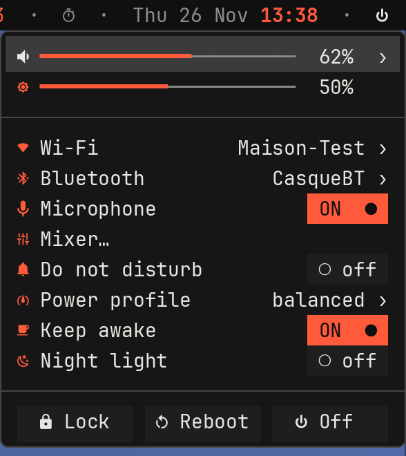
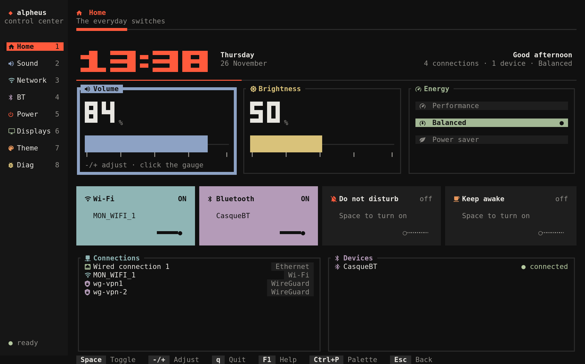

NAME
alpheus, alpheus-demon, alpheus-launch - a lightweight, terminal-spirited Wayland desktop shell
SYNOPSIS
alpheus-demon
alpheus-launch [--toggle | --dmenu | --quick [detail] | --capture verb | --tools | --dnd on|off|toggle | …]
alpheus [--tab name]
DESCRIPTION
A lightweight, terminal-spirited Wayland desktop shell, written in Rust: a bar, a launcher, notifications, an on-screen display, quick settings and a terminal control center. Aimed at modest hardware with modern features, and light first: it keeps nothing resident that it does not need and wakes up for nothing at rest. Mouse and keyboard everywhere.
Three programs from one Cargo workspace: alpheus-demon (the resident daemon), alpheus-launch (a tiny client that talks to it from a key bind or a script) and alpheus (the control center).

COMPONENTS
- The bar (bar.md)
Workspaces, window title, media, sound, network, Bluetooth, battery, resources, tray, clock, one bar per screen; with the tray, calendar, media, resources, timer, privacy indicators, failed units and the power menu.
- The launcher (launcher.md)
Apps, windows, commands, a calculator, emoji, web search, a window switcher, your own command sources, and a --dmenu mode for scripts.

- Notifications (notifications.md)
alpheus's own server, bubbles, a bell, a history panel.

- The OSD (osd.md)
A pill for volume, microphone and brightness.

- Quick settings (quick-settings.md)
Volume, brightness, Wi-Fi, Bluetooth, VPN, do-not-disturb, power profile, session buttons.

- The control center (control-center.md)
A terminal program, eight tabs from Sound to Diag.

- Themes and bar styles (themes.md)
Fifteen presets or your wallpaper, light and dark, six bar shapes.

- The Tools menu (tools-menu.md)
One box for “do something to my session”, with a kill list, a scheduled shutdown and diagnostics tools.
- Captures (captures.md)
Screenshots of the screen or an area, a colour picker, annotation, OCR and screen recording through external tools.
- Displays (displays.md)
Screen layouts and profiles, with a “keep these settings?” trial.
- Shield mode (shield.md)
A public-network security mode, shown and switched by alpheus.
- Event hooks (hooks.md)
A command of your own when something changes.
- Clipboard history (clipboard.md), quick notepad (notes.md)
The clipboard history is off unless enabled.
INSTALLATION
The x86_64 Linux tarball of a release, checked against its SHA256SUMS:
v=0.2.0
base=https://github.com/mornepousse/alpheus/releases/download/v$v
curl -fLO "$base/alpheus-$v-x86_64-linux.tar.gz"
curl -fLO "$base/SHA256SUMS"
sha256sum -c SHA256SUMS
tar -xzf "alpheus-$v-x86_64-linux.tar.gz"
install -Dm755 -t ~/.local/bin "alpheus-$v-x86_64-linux"/alpheus "alpheus-$v-x86_64-linux"/alpheus-demon "alpheus-$v-x86_64-linux"/alpheus-launchOr with Nix, or from source:
nix run github:mornepousse/alpheus#alpheus-demon # straight from GitHub, no clone
nix build .#alpheus-demon .#alpheus-launch .#alpheus # or: cargo build --releaseThen:
alpheus-demon # from your compositor's startup
alpheus-launch --toggle # bind this to a key
alpheus --tab sound # the control center, on a tabBuild and runtime dependencies, a flake input, and key binds for Hyprland, Sway, niri and Mango: install.md.
FILES
Four small TOML files you write, all optional, no message when one is missing, under $XDG_CONFIG_HOME/alpheus/ (~/.config/alpheus/ by default):
- bar.toml
The daemon: modules, font, per-module keys, hooks. Read once at start.
- launcher.toml
The launcher.
- theme.toml
Colours, mode, bar style. A new one is picked up by itself.
- config.toml
The control center.
- displays.toml
A fifth, written by the control center's Displays tab.
Every key, its default and its bounds: configuration.md.
MEMORY
What a desktop shell keeps resident, measured as PSS on release builds.
| SHELL | TOOLKIT | RESIDENT | COVERS |
|---|---|---|---|
| alpheus | Rust, no toolkit | ≈ 15 MB | the bar daemon and sound source, swaybg (optional); to be re-measured |
| waybar + mako + swayosd + swaybg | GTK / C | ≈ 55 MB | bar, notifications, OSD, wallpaper |
| HyprPanel | GJS | ≈ 151 MB | bar, notifications, OSD (Hyprland only) |
| Wayle | Rust, GTK4 | ≈ 168 MB | bar, panels |
| ashell + swaync | Rust, iced | ≈ 194 MB | bar, notifications |
| Noctalia 4.7 | Quickshell (QML) | ≈ 517 MB | full shell |
| DankMaterialShell | Quickshell (QML) | ≈ 537 MB | full shell |
| Caelestia | Quickshell (QML) | ≈ 730 MB | full shell |
How each figure was taken, and alpheus component by component: measurements.md.
NOTES
What it leaves to other tools: idle, sleep and screen power-off (hypridle(1), swayidle(1)…), the lock screen, file choosers and the wallpaper (swaybg(1) works). alpheus never touches sleep or screen power-off.
It works under Mango, Sway, Hyprland and niri (compositors.md).
BUGS
A personal project, used daily by its author, who keeps adding to it; expect rough edges outside that setup.
It is not packaged for any distribution yet: it builds with Nix or Cargo. Some defaults still call commands alpheus does not ship, such as wm-set to switch a workspace; those of the bar and the launcher are configurable, and a missing command fails visibly and breaks nothing else.